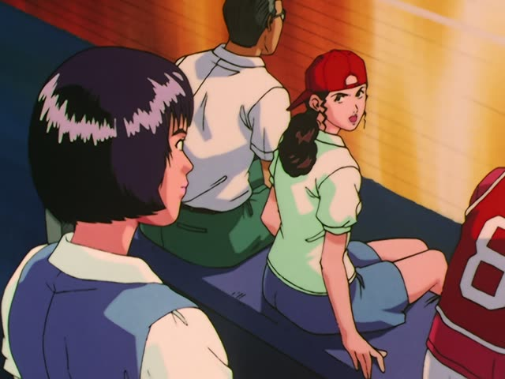
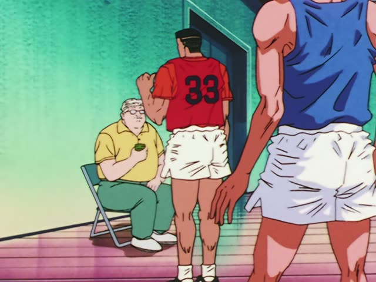
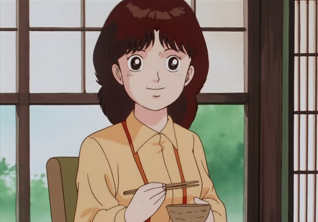
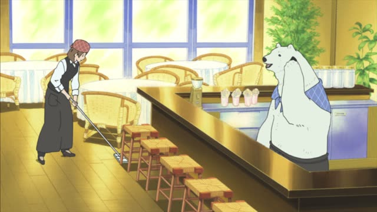
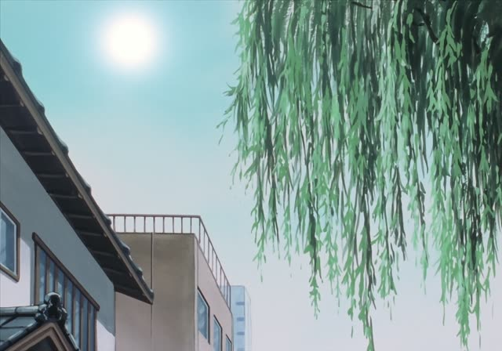
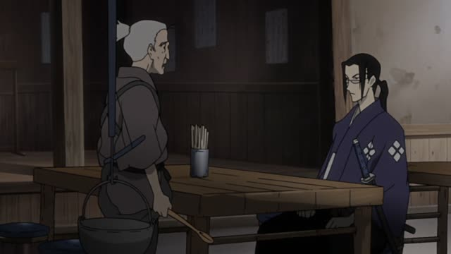

～たばかり
The Wind Rises
そこの店で買ったばかりのシベリヤです。
"It's a Siberia cake I just bought at that shop."
～たばかり means "just did": it happened not long ago, or it feels recent. た-form + ばかり: 買ったばかり, 始めたばかり.
On this card, Jiro offers a cake he just bought to two hungry kids. Before a noun: 買ったばかりのシベリヤ, with の. です makes it polite.
ところ is the exact moment ("just this second"). ばかり can stretch: 先月来たばかり, "I only came last month".

Slam Dunk · Episode 94
まだまだ試合は始まったばかりよ。
"The game has only just started."
On this card, Haruko's friend worries about the score. Haruko: it's only just begun.
Quick Examples
A friend asks about your Japanese.
まだ始めたばかりです。
"I've only just started."
PoliteYour friend offers you lunch.
今食べたばかりなんだ。
"I just ate."
CasualYou show off your new phone.
先週買ったばかりのスマホです。
"It's a phone I bought just last week."
Before a noun: ばかりの.
PoliteYour roommate asks why you're tired.
引っ越したばかりだから。
"Because I just moved."
CasualWith and without
日本に来ました。
"I came to Japan." When? Not said.
日本に来たばかりです。
"I've only just come to Japan." It's recent.
Examples from Media

Slam Dunk · Episode 7
まだバスケットを始めたばかりですし。
"He's only just started basketball."

Oishinbo · Episode 50
煮えたばかりの熱い豆を入れてやります。
"You put in the hot beans fresh from the pot."
Making natto. ばかりの + noun.
1 Litre of Tears · Episode 1
今朝ね、畑でとってきたばかりなんだ。
"I just picked these from the field this morning."

Shirokuma Cafe · Episode 49
この前起きたばかりなのに、また寝てるの。
"He just woke up the other day, and he's asleep again."
About a sleepy polar bear.

Oishinbo · Episode 30
採ったばかりなのに、どうしてなんだ？
"I just picked them, so why?"
They've all gone black.
Dungeon Meshi · Episode 18
丁度いい食材が手に入ったばかり。
"We just got hold of some good ingredients."

Samurai Champloo · Episode 3
ひと騒動あったばかりでね。
"We just had some trouble."
Last Samurai Standing · Episode 1
まあ、まだ始まったばかり。
"Well, it's only just begun."